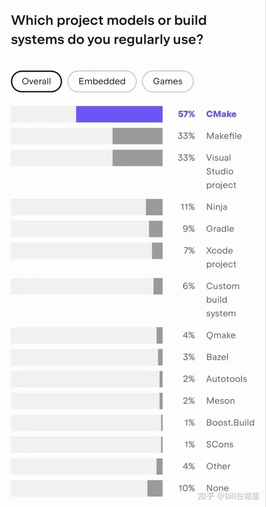
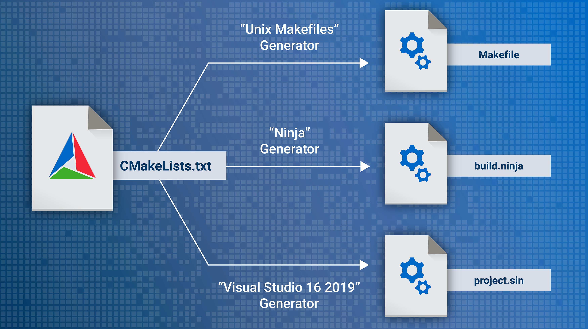
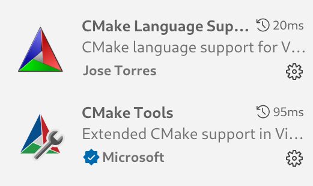
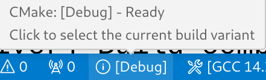

章节列表 ↵
现代CMake教程
C++的复杂系统构建几乎都要用到CMake,尽管国内先进的CMake系统教程有很多，但是很多缺少专业性，不够严谨，所以我们需要一个现代的、准确的CMake教程。

什么是CMake？
CMake 是一个跨平台的开源构建系统生成器(也称为元构建工具)，可以给其他构建工具(Visual Studio、Make、Ninja、Xcode)生成配置文件(project.sln、build.ninja、Makefile)。
从根本来讲构建系统就是将源代码转换(.cpp)为二进制文件(.exe|.lib|.dll) 
为什么不直接使用编译器？
最简单的的当然是直接使用命令行调用gcc、cl.exe、clang++等工具，但是一旦代码库复杂起来，就不可能只靠命令行。
单文件的情况下编译只需要一行
g++ -o main.exe main.cpp
多个文件的话就会复杂一点:
# examples/step1
$ tree
├── foo.cpp
├── foo.h
├── main.cpp
$ g++ -o foo.o -c foo.cpp
$ g++ -o main.o -c main.cpp
$ g++ -o step1 main.o foo.o
$ ./step1
43
而且当我们需要构建debug、release版本并且需要手动链接库的时候，命令行就不能满足我们的需求了。
下一章环境搭建
参考文档
https://cliutils.gitlab.io/modern-cmake/README.html
https://cmake.org/cmake/help/v3.20/index.html
https://modern-cmake-cn.github.io/Modern-CMake-zh_CN/
https://xiazuomo.gitbook.io/modern-cmake-chinese/introduction
https://ukabuer.me/blog/more-modern-cmake/
https://www.bilibili.com/video/BV1Mw411M761/
https://www.bilibili.com/video/BV16P4y1g7MH
https://crascit.com/professional-cmake/
https://zh.wikipedia.org/wiki/CMake
https://github.com/Mq-b/CXX_LIB
CMake C++环境搭建
实际上很多IDE上都CMake有支持，常见的如：VScode、Visual Studio、Clion， 当然命令行是最通用的方法，这些都不是必要的，只是有高亮和补全会更友好。
-
首先需要安装CMake
-
对于VScode 需要安装下面两个插件，支持高亮和部分补全 
安装CMake插件后可能没有完全展示状态条,需要在.vscode/settings.json中加上
"cmake.options.> statusBarVisibility": "compact"
CMake插件的状态栏功能介绍
显示[Debug]是指构建的时候会使用Debug作为构建类型,可以选择的有Debug、Release、RelWithDebInfo 和 MinSizeRel
构建类型会影响下面的内容(影响的命令行参数以GCC为例)：
1. 优化级别: [-O1,-O2,-O3]
2. 可执行文件是否包含调试信息: [-g]
3. 代码中assert是否起作用: [-DNDEBUG]
4.
Debug: 带有Debug信息，支持断点。
Release：没有Debug信息，不支持断点，启用代码优化。
RelWithDebInfo：
